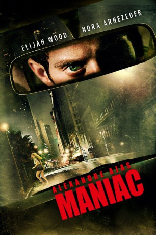
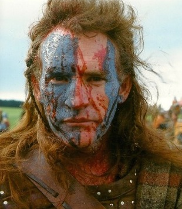

#7797 Alexandre Ajas Maniac
 
 IMDB-Wertung: 6.1 / 10
IMDB-Wertung: 6.1 / 10  Metascore: 0
Metascore: 0 
Frank ist Besitzer eines Ladens für Schaufensterpuppen. Er lebt ein eher zurückhaltendes und verschlossenes Leben. Doch dies ändert sich, als die junge und hübsche Anna in sein Leben tritt. Für ihre neue Ausstellung wendet sie sich an Frank. Aus dem Treffen entwickelt sich eine Freundschaft. Doch der Schein trügt. Denn unter der Oberfläche verstärkt sich seine geheime Besessenheit. Je länger die Freundschaft anhält, desto heftiger tritt seine Manie zum Vorschein.
Jahr: 2012
Dauer: 88 Minuten
FSK: Not Rated
Land: Frankreich Studio: Ascot Elite Entertainment GroupTonspuren: DTS - ,
Untertitel: Deutsch,
Auflösung: 1080p (1920x808) Größe: 5099 MB
Genre: Horror
Regisseur: Franck Khalfoun
Drehbuch: Alexandre Aja
Soundtrack: Robin Coudert
Darsteller:
- Nora Arnezeder als Anna
- Brian Ames als 80's Man 1
- America Olivo als Frank's Mother
- Genevieve Alexandra als Jessica
- Liane Balaban als Judy
- Jan Broberg als Rita
- Aaron Colom als Alley Man
- Megan Duffy als Lucie
- Luis Fernandez-Gil als Waiter
- Dan Hunter als Nick
- Akbar Kurtha als Pharmacist
- Sal Landi als Police Chief
- Bryan Lugo als Officer Burton
- Mike McCarty als Puppeteer #1
- Délé Ogundiran als Policewoman
- Steffinnie Phrommany als Clubber Girl
- Ron Reznik als Officer Norton
-  Mic Rodgers als Old Man
 Sammi Rotibi als Jason
Sammi Rotibi als Jason- Elijah Wood als Frank
- Jacqueline Buda als Jogger (uncredited)
- Freedom als Policeman (uncredited)
- Davis Neves als Girl in Striped Dress (uncredited)
- Joshua Delagarza als Martin Nunez
- Alex Diaz als Puppeteer #2
- Eli Dupont als Young Frank
- Devra Korwin als Saleswoman
- Patrick Orr als 80's Man 2
- Rochelle Rudolph als Dancer #2
- Gregory Taieb als Walker
- Lauren Emily Vaughan als Dancer #1
- Steven James Williams als Frank #2
- Zoe Aggeliki als Jenna (uncredited)
- Courtney Howard als Art Patron (uncredited)
Datei: X:\FSK18-2012\Alexandre Ajas Maniac (2012, FSKNot Rated, 1920x808).mkv seit 20.12.2017
Festplatte: FSK18
 Es gibt insgesamt 26 Filme in der Gruppe 'FSK18-2012'
Es gibt insgesamt 26 Filme in der Gruppe 'FSK18-2012'